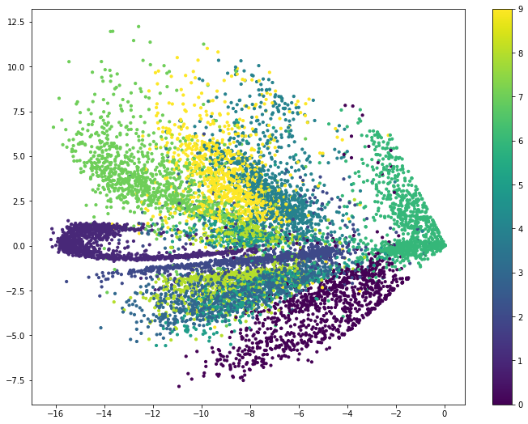
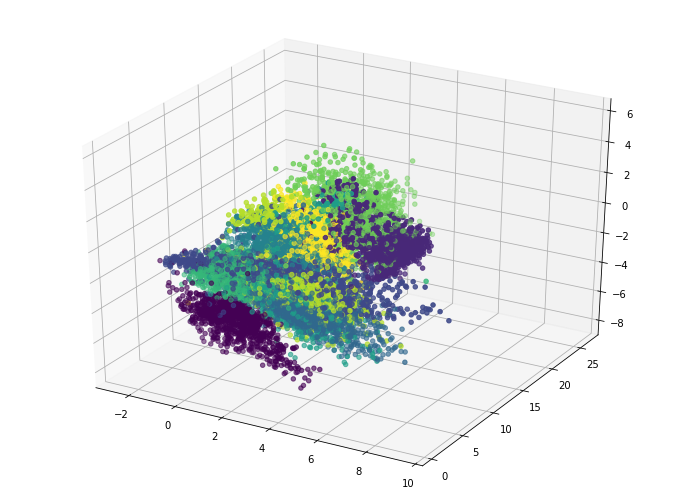

matplotlib绘制散点图
上一篇文章，我们通过自编码器，将高维的特征压缩至二维和三维，这样就可以实现可视化效果。
- 前排提醒：本文中代码为部分关键代码，全部代码请移步该项目的GitHub：Autoencoder实现降维与可视化
# 压缩特征维度至2维
encoding_dim = 3
# this is our input placeholder
input_img = Input(shape=(784,))
# 编码层
encoded = Dense(128, activation='relu')(input_img)
encoded = Dense(64, activation='relu')(encoded)
encoded = Dense(10, activation='relu')(encoded)
encoder_output = Dense(encoding_dim)(encoded)如上面的代码，我们利用全连接神经网络实现了降维，降至二维。
我们训练好自编码器模型后，从中获取编码模型，接下来我们会用这个编码模型对测试数据进行编码。
# predict & plotting
encoded_imgs = encoder.predict(x_test)
plt.figure(figsize= (12,9)) # 设置窗口大小
plt.scatter(encoded_imgs[:, 0], encoded_imgs[:, 1], c=y_test) # 绘制散点图
plt.colorbar()
plt.show()x_test的初始shape为（10000， 784），10000表示10000张图，784为每张图片的像素点数目（28*28）。经过编码器压缩之后encoder.predict() 变成了（10000，2）
再利用matplotlib的散点图绘制出只有二个特征的特征向量。
具体效果如图：

可以看出，自编码器的降维效果也是不错的。
同样的，我们在把特征压缩到三维的时候，可以画出一个三维的散点图。绘制过程稍有点不同。
# predict & plotting
encoded_imgs = encoder3D.predict(x_test)
plt.figure(figsize= (12,9))
ax1 = plt.axes(projection='3d')
ax1.scatter3D(encoded_imgs[:, 0], encoded_imgs[:, 1],encoded_imgs[:, 2], c=y_test)
plt.show()
- 下面记录一下散点图的用法
文档地址：scatter文档
matplotlib.pyplot.scatter(x, y, s=None, c=None, marker=None, cmap=None, norm=None, vmin=None, vmax=None, alpha=None, linewidths=None, verts=<deprecated parameter>, edgecolors=None, \*, plotnonfinite=False, data=None, \*\*kwargs)scatter(x, y, 点的大小, 颜色，标记) # 这是最主要的几个用法点的形状属性由marker控制，默认为。， c 控制点的颜色， norm 控制亮度